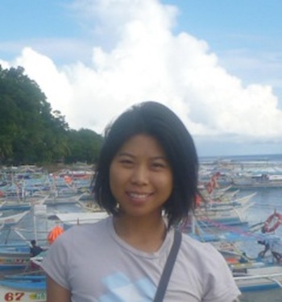
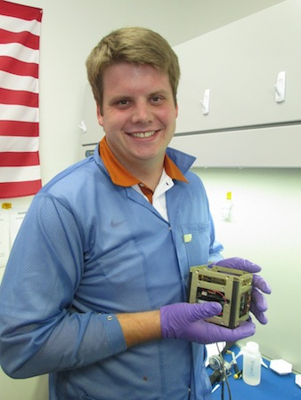
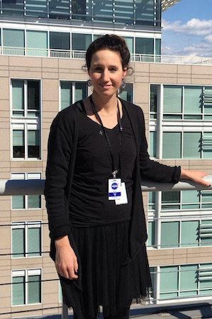
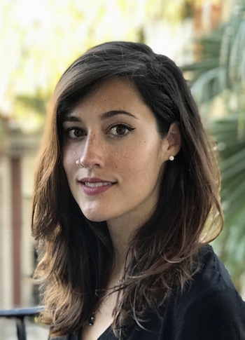
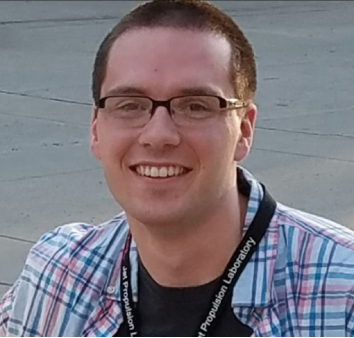
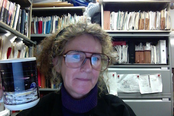

Alessandra received her B.S. and M.S degrees from the Politecnico di Milano, Milan, Italy, in 2005 and 2007, respectively, and her Ph.D. degree from the Massachusetts Institute of Technology (MIT), Cambridge, in 2012. She is currently a Telecommunication Engineer at NASA JPL (332H). She has developed communication systems for different university missions (CASTOR, ExoplanetSat, TerSat, REXIS, TALARIS). She has been with the Communication Architecture Research Group, NASA Jet Propulsion Laboratory, Pasadena, CA. Her current research interests include communication architecture design, statistical risk estimation, multidisciplinary design optimization, and mission scheduling and planning. She was a member of the organizing committee for iCubeSat 2012 (MIT, Cambridge), and she is a session chair at the IEEE Aerospace Conference.
Rodrigo Zeledon
Rodrigo received his B.S. in Aerospace Engineering from the Massachusetts Institute of Technology in 2009. He is currently a fourth-year Ph.D. student at Cornell University's Space Systems Design Studio. His research interests include spacecraft dynamics, small spacecraft design and small-scale propulsion systems. His current work involves the development of an electrolysis propulsion system for CubeSats.
Derek Dalle
Derek Dalle is an aerodynamics engineer/researcher in NASA Ames' Applied Modeling and Simulation branch (Code TNA) with Science & Technology Corp. His current focus is aerodynamics for the Space Launch System using NASA's High-End Computing Capability efficiently. He received a Ph.D. from Michigan in 2013. His interests include various types of trans-atmospheric vehicles including air-breathing hypersonic engines, launch vehicles, reentry applications, and others. Previously he was a aerodynamics engineer at Raytheon Missile Systems in Tucson, Arizona.
Farah Alibay
Farah received her Bachelor's and Master's degrees from the University of Cambridge in Aerospace and Aerothermal Engineering in 2010, and her PhD in Space Systems Engineering from the Massachusetts Institute of Technology (MIT) in 2014. Her PhD research focused on the use of spatially and temporally distributed systems for the exploration of planetary bodies in the solar system, as well as developing tools for the rapid evaluation of mission concepts in early formulation. She is currently working as a systems engineer at NASA's Jet Propulsion Laboratory (JPL) in the Planetary Mission Formulation group.
Carlyn Lee

Carlyn is a software engineer for the Telecommunication Architecture Group at NASA Jet Propulsion Laboratory. She is involved in link budget analysis tools development and optimization for space communication and navigation. Her research interests include communication systems, networking architecture, and high-performance computations.
Travis Imken

Travis Imken received an M.S. in Aerospace Engineering from The University of Texas at Austin in 2014. His research focused on the development of the 3D-printed cold-gas attitude control system for the JPL INSPIRE CubeSatellites. While at UT Austin, Travis worked in the Texas Spacecraft Laboratory and supported many small satellite missions in various leadership roles, including the Bevo-1 picosatellite and the Bevo-2, ARMADILLO, and RACE CubeSats. He currently works as a Systems Engineer in the Advanced Design Engineering Group at the Jet Propulsion Laboratory. Travis serves as a systems engineer and model developer for the Team Xc concurrent design team. He also works as a systems engineer for the proposed interplanetary Lunar Flashlight and NEA Scout CubeSat missions. Travis is an avid skier and enjoys the outdoors.
Julianna Fishman

Julianna Fishman is the founder of Technology Horse LLC, a program and project management services company. Ms. Fishman facilitates activities of the Technology Integration Agent, a process utilized by several multidisciplinary NASA programs to define mission, program, and project priorities; support requirements analysis; and perform technology assessments. From 1994 to the present, she has provided program and project formulation and implementation support to several NASA programs at both NASA Headquarters and Ames Research Center to include: Space Biology, Gravitational Biology and Ecology, Fundamental Space Biology, Biomolecular Physics and Chemistry, Astrobionics Technology Group, Dust Management Project, Small Spacecraft Technology Program, Small Spacecraft Systems Virtual Institute, and the Office of the Center Chief Technologist. In her capacities, Ms. Fishman makes contributions in the areas of program and project document content development; focus group, workshop, and review planning; and development of presentations, white papers, and communications material. She holds a Bachelor of Science degree in biology and a Master’s in Business Administration from Norwich University in Northfield, Vermont.
Kristina Hogstrom

Kristina Hogstrom received her B.S. in Mechanical Engineering with a minor in Astronomy from Boston University in 2011 and her M.S. and Ph.D. in Space Engineering from Caltech in 2012 and 2017 respectively. At Caltech, she was a NASA Space Technology Research Fellow and a Keck Institute for Space Studies Fellow. Her doctoral research focused on the behavior of deployable modules for robotically assembled space structures, such as large space-based optical reflectors. She is now a systems engineer at JPL in the mission formulation section and has an active role on Team X, a concurrent engineering team that rapidly explores, designs, and evaluates mission concepts in the early stages of development.
Alex Austin

Alex Austin received a bachelor’s degree in aeronautical and mechanical engineering and a master’s degree in aeronautical engineering from Rensselaer Polytechnic Institute (RPI) in 2016. His research focused on the optimization of multicopter rotor designs using computational fluid dynamics. While at RPI, Alex also worked on a CubeSat project to design a system capable of capturing and deorbiting a small piece of space debris. He currently works as a Systems Engineer in the Advanced Design Engineering Group at NASA JPL, where he supports a number of early formulation projects and mission proposals. Alex also works closely with the JPL concurrent engineering design teams (A-Team, Team X, and Team Xc) to rapidly create and evaluate new mission concepts.
Chi-Wung Lau
Chi-Wung Lau is a member of the Signal Processing Research group at Jet Propulsion Laboratories. He has been working at JPL for 15 years and has been involved with such projects as Galileo, Deep Impact, MER, Phoenix and MSL. Research areas of interest are 34 meter array tracking quantum communications, and link analysis. He received bachelor’s from U.C. Berkeley in 1996 and master’s from the University of Southern California in 2001.
Pamela Clark

Pamela Clark, of the Advanced Instrument Concepts and Science Applications Group in the Instrument Division, at Jet Propulsion Laboratory, California Institute of Technology, is Technical Advisor of the JPL Cubesat Development Lab. She is also Science PI of the NASA EM1 Lunar IceCube Mission, as well as Convener and Program Chair for the Annual LunarCubes Workshops, and an adjunct research professor at Catholic University of America. She holds a PhD in Geochemical Remote Sensing from University of Maryland. Her interests include extending the cubesat paradigm to deep space technology demonstrations and science requirements driven cubesat missions, developing compact science instruments, evolving a low-cost development model for deep space missions, and using the cubesat paradigm to set up distributed networks for studying whole system dynamics. She is the author of several books, including Remote Sensing Tools for Exploration, Constant-Scale Natural Boundary Mapping to Reveal Global and Cosmic Processes, and Dynamic Planet: Mercury in the Context of its Environment.